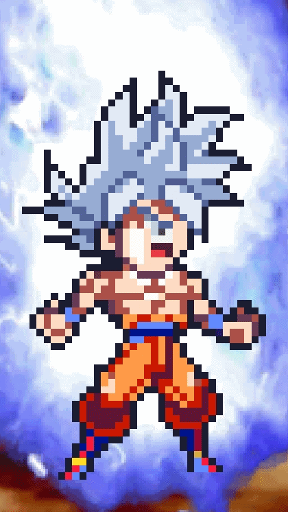
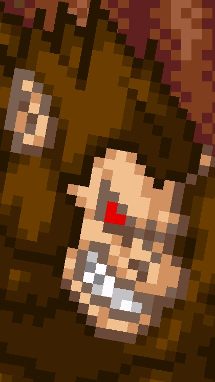
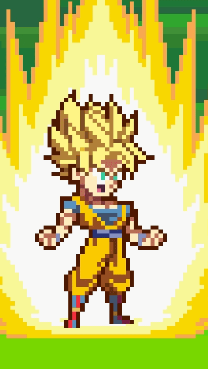
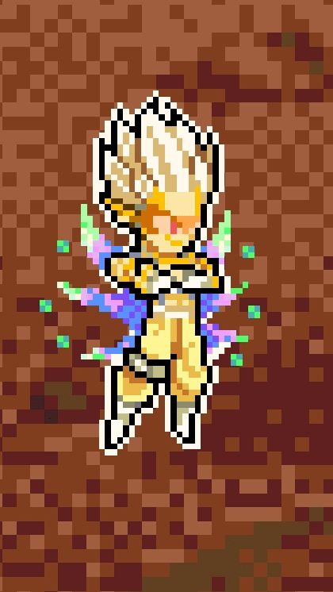
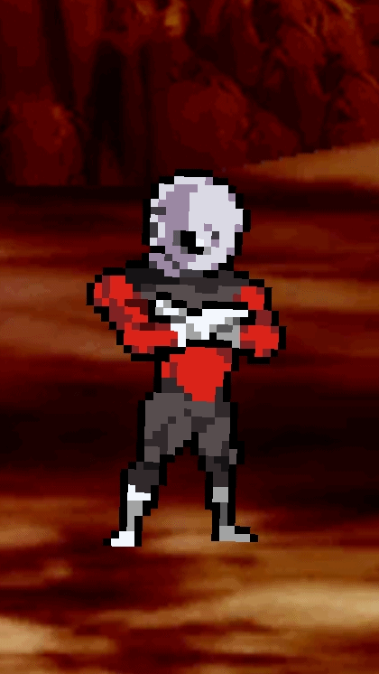
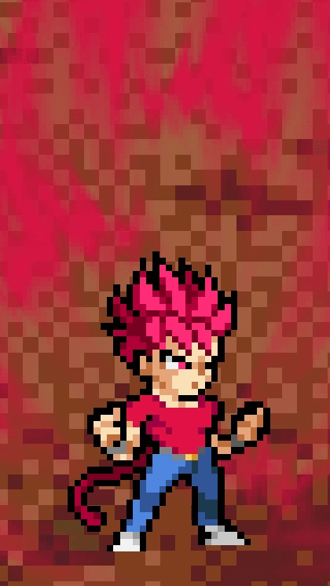
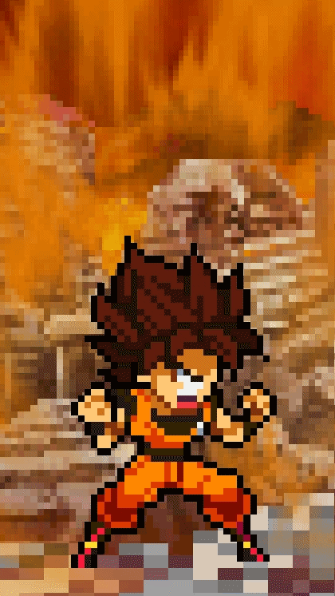
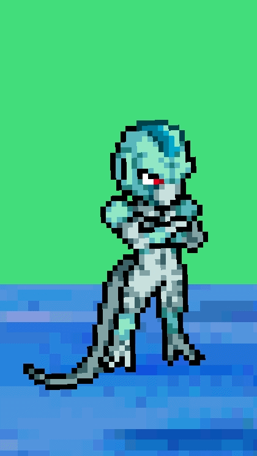
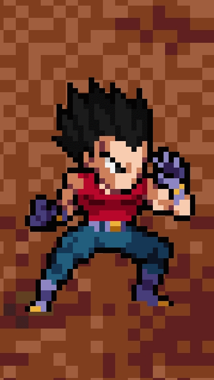
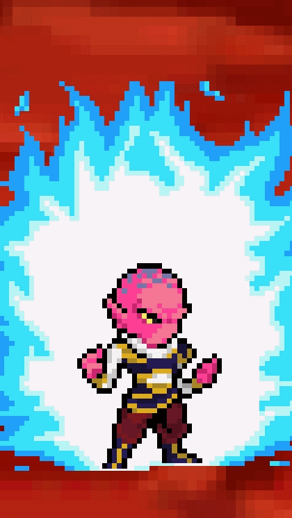

| Goku Ultra instinto | ||
|---|---|---|
|  | Goku Ultra instinto es el mas poderoso del juego, ya que es una técnica divina exclusiva de los ángeles, lo que lo hace famoso es por el gran daño que causa y también por su velocidad de movimiento más su defensa que le permite esquivar cualquier cosa. Es el personaje ideal para aquellos que quieran completar los retos. | |
| Ozarus | ||
|---|---|---|
| Los Ozarus son muy buenos en Power Warriors ya que por su tamaño y ser inmunes a ser aturdidos por golpes, especiales o parálisis por ki blast; les da una gran ventaja para asi golpear simultáneamente a los adversarios. Muchos los usan para los retos, pero su mayor desventaja es que su inmunidad le hace ser inmune a las ráfagas de ki consecutivas, lo que hace que se mueran en cuestión de segundos. |  | |
| Personajes Swl+ | ||
|---|---|---|
|  | Los personajes Swl+ son versiónes alternas o skins de algunos personajes que hay en el juego para añadir más variedad de tipos de sprites, ya que los sprites originales que fueron añadidos al juego fueron los lsw, por ejemplo Goku y Vegeta Super Saiyan swl+, estos a diferencia de sus versiónes Ulsw cuentan con 3 especiales en vez de 2 (también cuentan con buenas animaciones).Existen otros como Gohan Definitivo, Broly de Z y Super, entre otros con ese estilo. | |
| Hearts | ||
|---|---|---|
| Hearts es uno de los nuevos personajes de la más reciente actualización 16.7, fue amado por la comunidad ya que este cuenta con 6 especiales, cada una es muy llamativa. Este personaje fue muy pedido ya que en el juego hay personajes provenientes del anime promocional de Super Dragon Ball Heroes. Actualmente cuenta con un especial que tarda como 2 minutos y hace un gran daño (garantizado por el tiempo de espera de uno) |  | |
| Jiren | ||
|---|---|---|
|  | Jiren, el guerrero del universo 11 también es querido en el juego, ya que este sirve mucho para largas batallas (en su forma normal si este empieza a meditar, empezará a curarse) y también para los retos por su increíble daño con los ataques y especiales de su forma de máximo poder. | |
| Erbito Super Saiyan God | ||
|---|---|---|
|  | El primer FC de Erbito es considerado odiado ya que su especial suele ser molesto pero a la vez tierno, ya que este invoca un perro blanco que tira ráfagas de ki, pero a diferencia de su forma base, el perro tira más rápido y constantemente las ráfagas. | |
| Goku Super Saiyan Falso | ||
|---|---|---|
| Este Goku es muy molesto en el juego debido a que su especial y su ki blast son lo mismo, una serie de golpe repetidamente mientras se teletransporta. Es difícil de vencer y más si esta acompañado en un 1vs2, lo que lo vuelve imposible de atacar por la ayuda de su compañero junto con su especial y ki blast. |  | |
| Metal Cooler | ||
|---|---|---|
|  | Metal Cooler es odiado porque solo tiene un especial, se teletransporta y no necesita cargar energía, también se regenera poco a poco ua que eso hace en la película cuando es destruido mientras peleaba contra Goku y Vegeta en Namek. | |
| Vegeta Gt Base | ||
|---|---|---|
| Vegeta Gt en estado base es algo molesto ya que este tira una ráfaga de ki consecutivas y mientras más lejos este uno, este seguirá lanzando las ráfagas. También solo cuenta con un solo especial, lo que hage que varios pidan una remasterización del personaje junto a sus demás formas. |  | |
| Yadarat | ||
|---|---|---|
|  | El personaje de la raza Yadarat es muy odiado por su ki blast que básicamente es lo que lo caracteriza, usar técnicas como la teletransportación. Usando esa técnica le permite lanzar su especial único, y cuando estamos algo lejos de este empezará a teletransportarse como loco para dar con nosotros y hacernos la bida imposible, es lo mismo con el Goku Super Saiyan Falso. | |